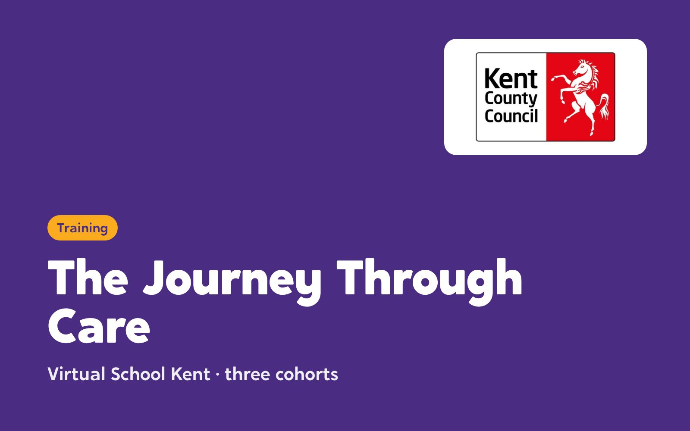
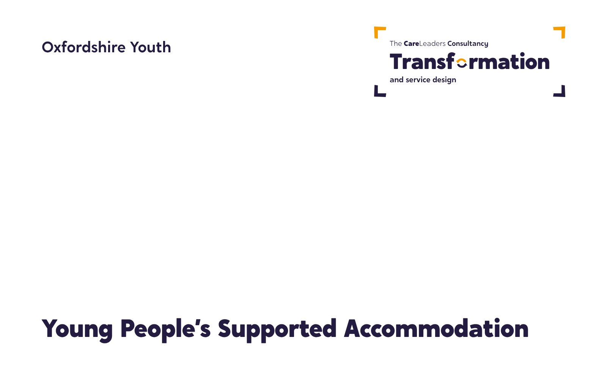
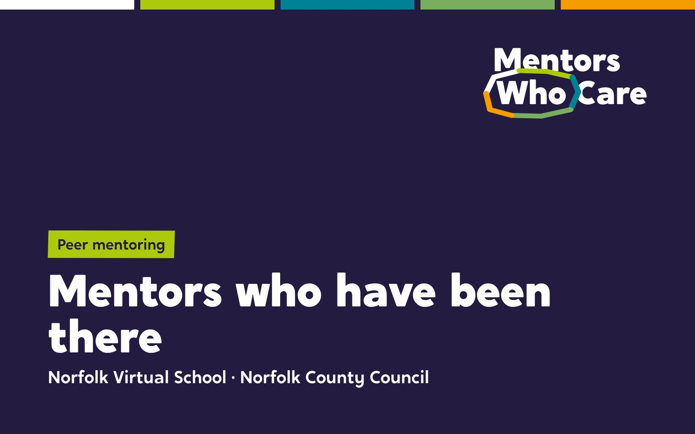
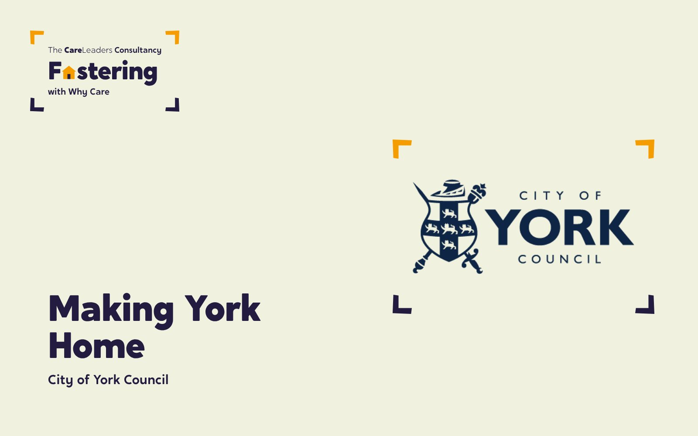
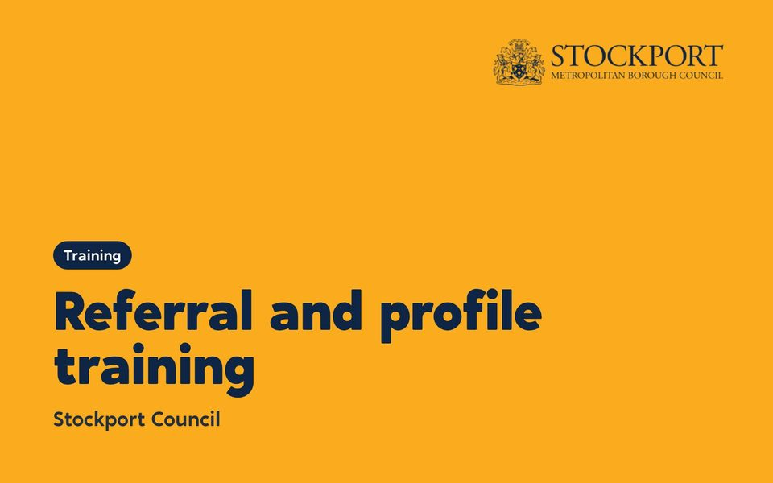

Our work with 36 councils, in every region of England
Work with 36 local authorities, the NHS and the Department for Education. Every one was co-designed with the children, families and staff who live with the result.


Case studies
Pick a type of work to narrow the list.

NHS Staffordshire and Stoke-on-Trent: Bridge and Beyond
One service for the children who fell between systems. A business case that secured £4 million, and more than 400 staff trained.
Read the case study
Suffolk County Council: The Family Business
From corporate parenting to community parenting. Over 60 people at the employer launch, and up to 40 young people qualified through the Skills Academy.
Read the case study
Virtual School Kent: A Tool for Change
One child’s story, three cohorts, a county’s schools. Around 490 staff signed up, and 124 of 125 said the first session met its objectives.
Read the case study
Durham County Council: Durham Cares
A new vision for children’s services, built from the ground up. 105 residential staff shaped it, and senior leaders agreed 95% of their solutions.
Read the case study
Durham County Council: NVR in residential care
Non-violent resistance in 11 children’s homes. 120 residential staff trained.
Read the case study
Durham County Council: Families First Partnership
Hearing from everyone before changing everything. Over 475 people heard across 50 teams.
Read the case study
Buckinghamshire Council: Youth Voice Bucks
A participation service young people named, branded and shaped. 19 champions from 11 service areas.
Read the case study
Regional Care Cooperative, South East: Youth Participation Collective
A regional network of participation workers, and a Shadow Board of 18 Youth Ambassadors, named and branded by young people themselves.
Read the case study
The National House Project: Care Leavers National Movement
A national movement led by young people leaving care. 12 care-experienced young people from six councils, trained in leadership.
Read the case study
Middlesbrough Council: PROCLAIM
Making a town-wide trauma-informed schools programme heard. 427 staff signed up to the training platform and 128 CPD certificates were issued.
Read the case study
Middlesbrough Council: Middlesbrough Children Matter
A vision built with young people, after special measures. 300 staff, young people and partners helped shape it.
Read the case study
Darlington Virtual School: Designated Leaders
The training designated teachers designed for themselves. 30 designated teachers trained on a 10-month programme they helped design.
Read the case study
Durham County Council: How Durham Cares
A film about how Durham cares, made with the people who do it. 35+ practitioners and young people interviewed for a documentary and seven short films.
Read the case study
Liverpool Virtual School: Rising Futures
A conference young people helped build. 5 young people designed and ran their own workshop.
Read the case study
NAVSH: a national co-design with Virtual School Heads
Co-designing the future of the role with the people who do it. 135 responses from a national workshop and survey.
Read the case study
The Care Leaders Summit 2026
A national day with care-experienced leaders at the front. 120 places, and 10 Fellows of The Care Leaders Fellowship on the guest list.
Read the case study
PwC: New World, New Skills
Opening the doors of a global firm to care leavers. 30 care leavers from four councils spent the day at PwC’s London office.
Read the case study
Oxfordshire Youth: Young People’s Supported Accommodation
Helping a youth work charity win and set up a county-wide housing service, on a five-year contract.
Read the case study
Rotherham MBC: services through young people’s eyes
A scope of children’s services through young people’s eyes. 11 service areas scoped, and a new participation model agreed.
Read the case study
Norfolk Virtual School: mentors who have been there
Care-experienced adults trained and coached to mentor children in care. In progress.
Read the case study
Why Care: our fostering partnership
Turning people who want to foster into confident carers who stay. In Durham, applicants were ready for panel in around 4 months.
Read the case study
City of York Council: Making York Home
Redesigning support for foster carers, with young people in care in the room. 9 days of youth engagement and co-design.
Read the case study
Stockport Council: Referral and profile training
Training foster carers and social workers to write and read about children differently, mapped to five fostering standards.
Read the case study